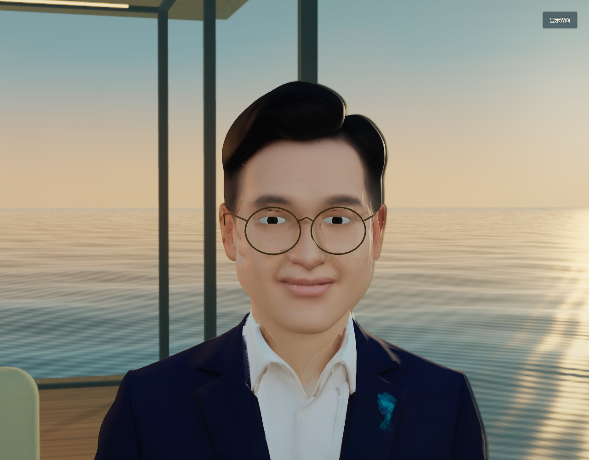
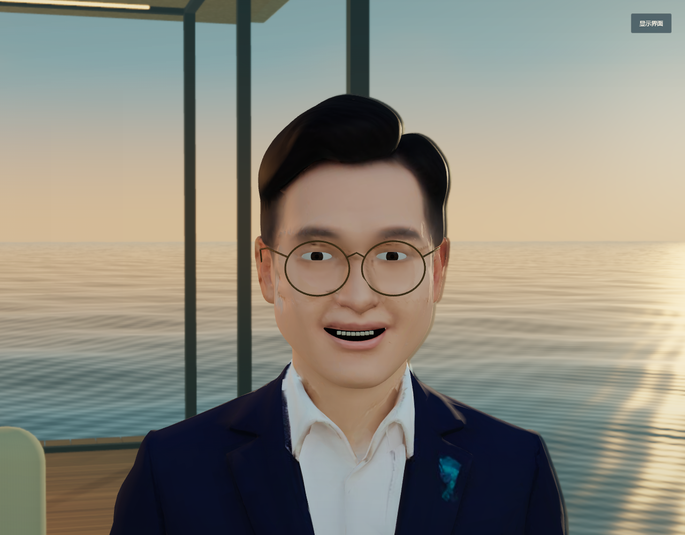

还是我们的脸，开始眨眼和讲解。
3.6 · 自有头部 · 功能已接入，面部自然度仍需精修保留你提供的 0597 人物的脸型、发型、眼镜、身体和深蓝西装，在自己的网格上补眼睑与嘴部结构。微软模型只用于参考面部控制方式；当前人物没有采用微软的头部或脸部网格。
进入网页后，点击「播放讲解」听中文介绍；可以暂停、继续或停止。点击「眨一下眼」检查闭合，「看向镜头」控制视线，「自然眨眼」控制待机节奏。
直接看网页录下的讲解
录制自同一个实时网页的三维画面与讲解音频，没有替换人物，也没有另外生成视频。声音为本机中文测试音色。
原脸上的实际变形


已接入：自动与手动眨眼、视线控制、21个面部变形、一段中文讲解及播放/暂停/继续/停止。嘴型使用实际音频播放时间作为时钟；暂停和停止后嘴部回到放松状态。
仍需精修：眼睑闭合、嘴角、唇齿比例与表情的自然度，以及脸侧与衣服原有生成痕迹。讲解的口型按实测音频停顿和拼音近似对齐，尚非逐音素精确同步。当前演示固定讲解，没有接入自由对话或麦克风识别。
上轮换用微软头部的方向已停止。原始0597文件、默认人物与历史稿均保留；本轮面部制作在我们自己的头部上完成，没有向外部服务上传人物。
制作与验证记录
在自有头部上连接61个原嘴部边界点，补唇缘开口、口腔、牙齿和舌部；加入双眼眨眼、四向视线、张口与多种唇形。21个形态键包含在可下载GLB中，身体动作仍使用既有Rocketbox动作参考（MIT）。
中文音频本地生成，停顿与能量用于分句/字音近似对齐。本机引擎没有返回原生口型时间戳，当前未使用语音识别或逐音素强制对齐；效果仍要按实际画面校准。
独立模型导入检查了面部变形、身体保持与5段已有动作。真实浏览器检查了眼睑/嘴部网格位移、播放时音频时间推进、暂停冻结、恢复、停止闭口、下载哈希及手机布局。功能通过不等于面部美术最终达标。
结构参考：Headbox 面部控制、微软口型与语音时间轴说明；没有导入微软头部或直接套用它的脸部形态。